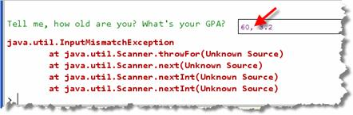

Console Input
The cin (see-in) standard input stream can read and convert user input, and store it into different kinds of variables. This is called formatted input, and it uses the extraction operator (>>) to read (extract) data from input, convert it and store the results in a variable.
Here's an example:
cout << "Enter limit: "; // prompt
int limit; // variable to hold the value
cin >> limit; // read, convert and store
When a user types 123 in response when prompted for limit, the input is three ASCII character values '1', '2', '3'. These are stored sequentially in memory, and then, when the user types ENTER, the three char values are combined and converted from text into to the int 123, which looks like this in memory:
This process—turning human-readable text into binary numbers, (and it's the reverse), is the job of parsing or conversion. The cin object does this for us.
Input Errors
If the user types an unexpected input value in Java or C# or Python, the system prints an error message on the console, and terminates the program.

This is a runtime error or exception, detected when your program runs, rather than when you compile it. C++ uses a different technique.
Instead of causing a runtime error and stopping, the input stream is placed in an invalid state, and stops receiving input. In C++ when the comma is encountered, your program doesn't crash. You'll learn how to handle these kinds of errors soon.
 This course content is offered under a
CC
Attribution Non-Commercial license. Content in this course
can be considered under this license unless otherwise noted.
This course content is offered under a
CC
Attribution Non-Commercial license. Content in this course
can be considered under this license unless otherwise noted.